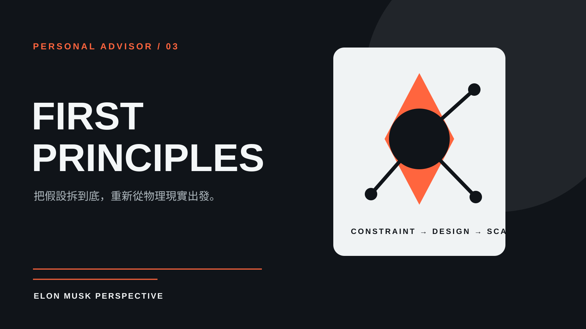

技能包 · 專屬顧問
Elon Musk 專屬第一性原理顧問
2026.08 · 個人專案

FIG. 11 — 產品主畫面
關於這個作品
以 Elon Musk 的公開訪談、演講、決策紀錄與外部批評資料為基礎蒸餾的專家 Agent。
它將問題拉回物理限制、成本結構與可驗證假設，適合用來挑戰既有做法、拆解複雜系統，並把野心轉為可執行的工程與營運問題。
作品亮點
以第一性原理拆解成本、限制與假設
從工程、製造與速度角度重估可行性
檢查 10 倍目標背後的關鍵瓶頸
在高風險決策中區分物理現實與慣例